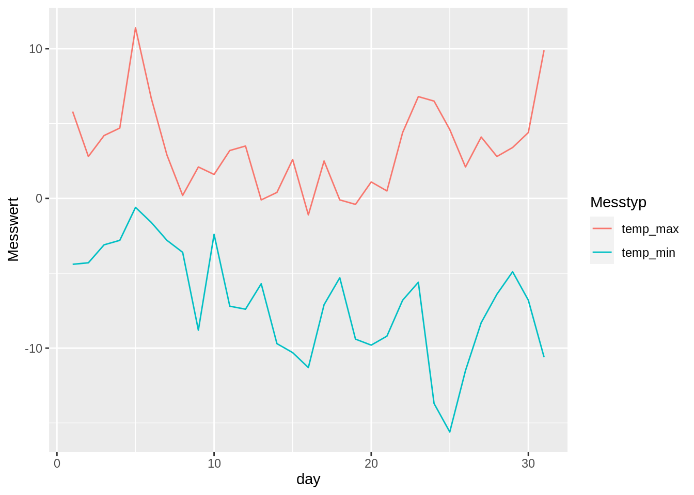
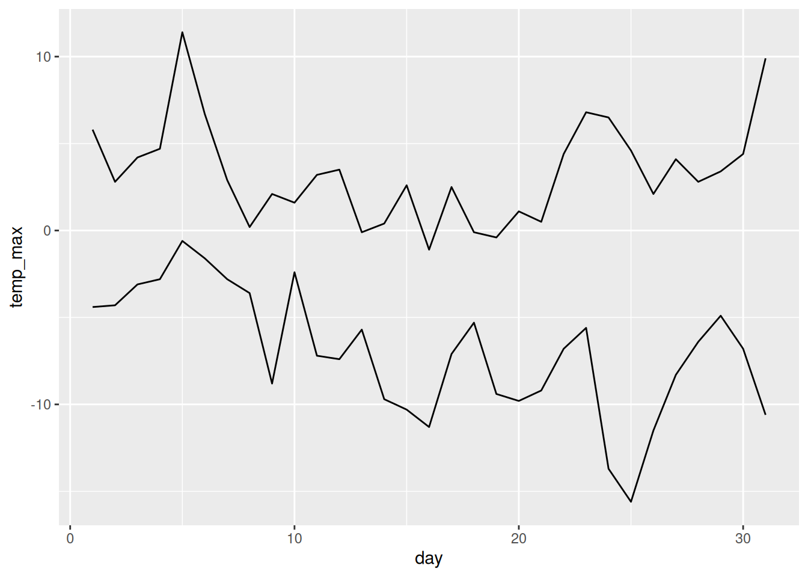

library("dplyr")
library("tidyr")
library("lubridate")
library("readr")
library("ggplot2")Prepro 3: Demo
In this demo, we will introduce other tools from the Tidyverse and explain them using examples. The tidyverse tools make dealing with data much easier and have now become a must have when dealing with data in R.
We cannot show you all the possibilities of tidyverse. Therefore, we will focus on the most important components and also introduce additional functionalities that we often use but may not yet be known to you. If you want to delve deeper into the topic, you should read Wickham and Grolemund (2017). An extensive, although not comprehensive version is available online1, and the full eBook can be obtained from the library 2.
We will need the following packages:
Split Apply Combine
Load data
Lets load the weather data (source MeteoSchweiz) from the last exercise.
weather <- read_delim("datasets/prepro/weather.csv", ",")
weather <- weather |>
mutate(
stn = as.factor(stn),
time = as.POSIXct(as.character(time), format = "%Y%m%d%H")
)Calculate values
We would like to calculate the average of all measured temperature values. To do this, we could use the following command:
mean(weather$tre200h0, na.rm = TRUE)
## [1] 6.324744The option na.rm = T means that NA values should be excluded from the calculation.
Various values can be calculated using the same approach (e.g. the maximum (max()), minimum (min()), median (median()) and much more).
This approach only works well if we want to calculate values across all observations for a variable (column). As soon as we want to group the observations, it becomes difficult. For example, if we want to calculate the average temperature per month.
Convenience Variables
To solve this task, the month must first be extracted (the month is the convenience variable). For this we need the lubridate::month() function.
Now the month convenience variable can be created. Without using dpylr, a new column can be added as follows:
weather$month <- month(weather$time)With dplyr (see 3), the same command looks like this:
weather <- mutate(weather, month = month(time))The main advantage of dplyr is not yet apparent at this point. However, this will become clear later.
Calculate values from groups
To calculate the average value per month with base R, you can first create a subset with [] and calculate the average value as follows:
mean(weather$tre200h0[weather$month == 1], na.rm = TRUE)
## [1] -1.963239We have to repeat this every month, which of course is very cumbersome. That is why we use the dplyr package. This, allows us to complete the task (calculate temperature means per month) as follows:
summarise(group_by(weather, month), temp_average = mean(tre200h0, na.rm = TRUE))
## # A tibble: 13 × 2
## month temp_average
## <dbl> <dbl>
## 1 1 -1.96
## 2 2 0.355
## 3 3 2.97
## 4 4 4.20
## 5 5 11.0
## 6 6 12.4
## 7 7 13.0
## 8 8 15.0
## 9 9 9.49
## 10 10 8.79
## 11 11 1.21
## 12 12 -0.898
## 13 NA 2.95Concatenate vs. Nest
Translated into English, the above operation is as follows:
- Take the
weatherdataset - Form groups per year (
group_by(weather, year)) - Calculate the mean temperature (
mean(tre200h0))
The translation from R -> English looks different because we read the operation in a concatenated form in English (operation 1->2->3) while the computer reads it as a nested operation 3(2(1)). To make R closer to English, you can use the |> operator (see 4).
# 1 take the dataset "weather"
# 2 form groups per month
# 3 calculate the average temperature
summarise(group_by(weather, month), temp_average = mean(tre200h0))
# \__1__/
# \___________2__________/
# \___________________3________________________________________/
# becomes:
weather |> # 1
group_by(month) |> # 2
summarise(temp_average = mean(tre200h0)) # 3This concatenation by means of |> (called pipe) makes the code a lot easier to write and read, and we will use it in the following exercises. Pipe is provided as part of the magrittr package and installed with dplyr.
There are several online tutorials about dplyr (see5). Therefore, we will not explain all of these tools in full detail. Instead we will just focus on the important differences for two main functions in dpylr: mutate() and summarise().
summarise()summarises a data set. The number of observations (rows) is reduced to the number of groups (e.g., one summarised observation (row) per year). In addition, the number of variables (columns) is reduced to those specified in the “summarise” function (e.g.,temp_mean).mutateadds additional variables (columns) to adata.frame(see example below).
# Maximum and minimum temperature per calendar week
weather_summary <- weather |> # 1) take the dataset "weather"
filter(month == 1) |> # 2) filter for the month of January
mutate(day = day(time)) |> # 3) create a new column "day"
group_by(day) |> # 4) Use the new column to form groups
summarise(
temp_max = max(tre200h0, na.rm = TRUE), # 5) Calculate the maximum
temp_min = min(tre200h0, na.rm = TRUE) # 6) Calculate the minimum
)
weather_summary
## # A tibble: 31 × 3
## day temp_max temp_min
## <int> <dbl> <dbl>
## 1 1 5.8 -4.4
## 2 2 2.8 -4.3
## 3 3 4.2 -3.1
## 4 4 4.7 -2.8
## 5 5 11.4 -0.6
## 6 6 6.7 -1.6
## 7 7 2.9 -2.8
## 8 8 0.2 -3.6
## 9 9 2.1 -8.8
## 10 10 1.6 -2.4
## # ℹ 21 more rowsReshaping data
Wide → long
Tables can be transformed from wide to* long* using tidyr (see 6). This package also works perfectly with piping (|>).
weather_summary |>
pivot_longer(c(temp_max, temp_min))
## # A tibble: 62 × 3
## day name value
## <int> <chr> <dbl>
## 1 1 temp_max 5.8
## 2 1 temp_min -4.4
## 3 2 temp_max 2.8
## 4 2 temp_min -4.3
## 5 3 temp_max 4.2
## 6 3 temp_min -3.1
## 7 4 temp_max 4.7
## 8 4 temp_min -2.8
## 9 5 temp_max 11.4
## 10 5 temp_min -0.6
## # ℹ 52 more rowsIn the pivot_longer() command, we have to define which columns should be summarised (in this case: temp_max, temp_min, temp_mean). Alternatively, we can specify which columns we do not want to summarise:
weather_summary |>
pivot_longer(-day)
## # A tibble: 62 × 3
## day name value
## <int> <chr> <dbl>
## 1 1 temp_max 5.8
## 2 1 temp_min -4.4
## 3 2 temp_max 2.8
## 4 2 temp_min -4.3
## 5 3 temp_max 4.2
## 6 3 temp_min -3.1
## 7 4 temp_max 4.7
## 8 4 temp_min -2.8
## 9 5 temp_max 11.4
## 10 5 temp_min -0.6
## # ℹ 52 more rowsIf we want to set the names of new columns (instead of name and value), this can be achieved by using names_to or values_to:
weather_summary_long <- weather_summary |>
pivot_longer(-day, names_to = "MeasurementType", values_to = "MeasurementValue")The first 6 lines of weather_summary_long:
| day | MeasurementType | MeasurementValue |
|---|---|---|
| 1 | temp_max | 5.8 |
| 1 | temp_min | -4.4 |
| 2 | temp_max | 2.8 |
| 2 | temp_min | -4.3 |
| 3 | temp_max | 4.2 |
| 3 | temp_min | -3.1 |
The first 6 lines of weather_sry:
| day | temp_max | temp_min |
|---|---|---|
| 1 | 5.8 | -4.4 |
| 2 | 2.8 | -4.3 |
| 3 | 4.2 | -3.1 |
| 4 | 4.7 | -2.8 |
| 5 | 11.4 | -0.6 |
| 6 | 6.7 | -1.6 |
Note: weather_summary_long comprises 62 observations (rows), which is twice as much as weather_summary, because we have combined two of the columns.
nrow(weather_summary)
## [1] 31
nrow(weather_summary_long)
## [1] 62Long tables are more practical in many situations. For example, visualising using ggplot2 (you will learn about this package in the “InfoVis” block) is much easier with long tables.
ggplot(weather_summary_long, aes(day, MeasurementValue, colour = MeasurementType)) +
geom_line()
Long → wide
The counterpart to pivot_longer is pivot_wider. This function allows us to convert a long table into a wide one. To do this, we must specify in names_from which column the new column names should be created from (names_from) and which column the values should originate from (values_from):
weather_summary_long |>
pivot_wider(names_from = MeasurementType, values_from = MeasurementValue)
## # A tibble: 31 × 3
## day temp_max temp_min
## <int> <dbl> <dbl>
## 1 1 5.8 -4.4
## 2 2 2.8 -4.3
## 3 3 4.2 -3.1
## 4 4 4.7 -2.8
## 5 5 11.4 -0.6
## 6 6 6.7 -1.6
## 7 7 2.9 -2.8
## 8 8 0.2 -3.6
## 9 9 2.1 -8.8
## 10 10 1.6 -2.4
## # ℹ 21 more rowsFor comparison: We have to plot each column individually in ggplot2 for a wide table. While this is not a problem when we are only working with a few variables, like here, with a high number this quickly becomes tedious.
ggplot(weather_summary) +
geom_line(aes(day, temp_max)) +
geom_line(aes(day, temp_min))
http://r4ds.had.co.nz/↩︎
https://ebookcentral.proquest.com/lib/zhaw/detail.action?docID=4770093↩︎
Wickham and Grolemund (2017), Chapter 10 /http://r4ds.had.co.nz/transform.html↩︎
Wickham and Grolemund (2017), Chapter 14 / http://r4ds.had.co.nz/pipes.html↩︎
Wickham and Grolemund (2017), Chapter 10 / http://r4ds.had.co.nz/transform.html, or Hands-on dplyr tutorial..↩︎
https://r4ds.had.co.nz/tidy-data.html#pivoting↩︎